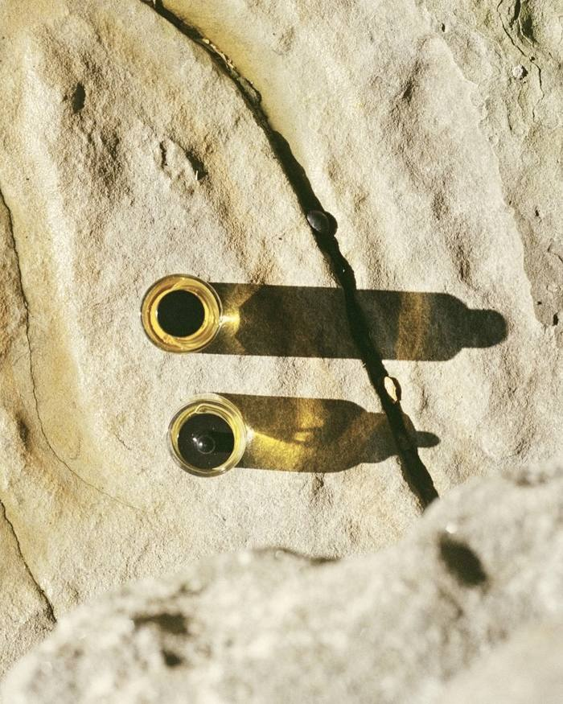

Antes de tudo
Uma história que merece ser conhecida.
O formulário de acolhimento reúne informações de cadastro, histórico clínico, hábitos e expectativas. Ele ajuda a organizar o que será conversado na consulta.
Preparar minha consulta ↗Medicina integrativa e cannabis medicinal
Um encontro com tempo para escutar você. Um olhar para o corpo, a rotina e o que importa na sua vida.
Para quem está chegando agora
Dor persistente, noites difíceis ou dúvidas sobre um tratamento: a consulta começa pelo que você sente e pelo impacto disso na sua rotina.
Oferece avaliação médica e acompanhamento com uma abordagem integrativa. Escuta sua queixa, revisa o histórico e os tratamentos em uso e conversa sobre possibilidades de cuidado. A cannabis medicinal pode ser uma dessas possibilidades, quando houver indicação individual.
Este site oferece informações e agendamento de consultas. Não comercializa cannabis nem outros produtos.
Um exemplo para entender
O objetivo da conversa é entender o problema e definir o que vale acompanhar: intensidade da dor, descanso, movimento e atividades importantes para você.
Exemplo educativo. Não é relato de paciente nem promessa de resultado.Onde dói? Há quanto tempo? O que piora ou melhora? Quais exames e tratamentos já foram feitos? Essas informações ajudam a orientar a avaliação.
A médica considera o tipo de dor, outras condições de saúde e os medicamentos em uso. Pode discutir alternativas, inclusive se faz sentido considerar um produto à base de cannabis.
Se um tratamento for indicado, o acompanhamento serve para avaliar benefício, efeitos indesejados e necessidade de rever a conduta. Sentir alguma melhora não significa que a causa da dor foi resolvida.
Em alguns estudos, determinados produtos mostraram pequenas melhoras de curto prazo, principalmente em dor neuropática — relacionada a lesões ou alterações dos nervos. Isso não vale para qualquer dor nem para qualquer produto. As revisões apontam incertezas, e CBD isolado não demonstrou benefício consistente para dor crônica.
Também podem ocorrer tontura, sonolência, náusea e interações com outros medicamentos. Por isso, o possível benefício precisa ser considerado junto dos riscos e das alternativas.
Um olhar que conecta
O que você sente faz parte de uma história. Entender essa história é o primeiro passo para construir um cuidado individual.
A medicina integrativa considera o histórico clínico, os tratamentos anteriores, o sono, os hábitos e as expectativas. Medicina convencional e possibilidades complementares são discutidas a partir dessa avaliação.
Veja como isso acontece na consulta ↓Conexões que ajudam a compreender o seu momento.
Conhecimento para decidir com calma
Você não precisa chegar com todas as respostas. Aqui estão pontos importantes para começar a conversa.

Cada indicação começaA consulta reúne o que você sente, seu histórico e o impacto disso na sua vida. Há espaço para falar de sono, rotina, tratamentos que já tentou e do que espera melhorar.
As decisões são individualizadas e feitas em conjunto com a médica.
Quem vai cuidar de você
Medicina integrativa com acolhimento, escuta e acompanhamento personalizado.
Sua atuação considera o paciente por inteiro e inclui a avaliação da cannabis medicinal entre as possibilidades de cuidado. Cada conversa parte do histórico, das necessidades e das expectativas da pessoa atendida.
Faculdade de Governança, Engenharia e Educação de São Paulo (FGE). Formação lato sensu de 480 horas, de novembro de 2024 a março de 2026.
Sua jornada de cuidado
Da preparação ao retorno, saiba o que acontece em cada etapa.
Encontrar um horário ↗Antes de tudo
O formulário de acolhimento reúne informações de cadastro, histórico clínico, hábitos e expectativas. Ele ajuda a organizar o que será conversado na consulta.
Preparar minha consulta ↗Na primeira consulta · 60 minutos
A médica escuta sua queixa, analisa seu histórico e os tratamentos em uso e explica as possibilidades terapêuticas. O plano de cuidado é construído com você.
A consulta não garante indicação ou prescrição de cannabis.Depois do encontro
O consultório informa envio de receituário e documentos em até 24 horas úteis. Após o início da medicação, a devolutiva médica por e-mail ocorre em até 15 dias, conforme o acompanhamento combinado.
As dúvidas sobre sintomas, efeitos ou ajustes devem ser conversadas com a médica.
Ao longo do caminho · retornos de 45 minutos
O diário ajuda a registrar sono, sintomas e percepções entre as consultas. Leve esses registros ao retorno para conversar sobre sua evolução e os próximos passos.
Conhecer o diário de bordo ↗Vamos organizar seu encontro?
Uma preparação simples abre espaço para uma conversa melhor.
Use a lista ao lado para se organizar. Ela não coleta dados clínicos e suas marcações não são enviadas ao consultório.
O formulário da doutora tem seis etapas: cadastro, informações clínicas, hábitos, segurança, expectativas e ciência sobre confidencialidade.
Separe seus dados e a lista de medicamentos. O Google Forms solicita uma conta Google e permite anexar exames quando disponíveis.
Abrir o formulário original ↗Preencher o formulário não confirma o agendamento e não substitui a consulta.Lista pessoal desta visita. As marcações são apagadas ao recarregar a página.
Perto de você
Três modalidades. A mesma atenção à sua história.
Consulta por telemedicina, sem deslocamento. Reserve um ambiente silencioso, com privacidade, boa iluminação e conexão estável.
Ver horários online ↗Espaço Angatu Medicinal. Rua Marechal Deodoro, 308, Floresta, Belo Horizonte/MG. O prédio não possui estacionamento próprio.
Ver como chegar ↗Atendimento em casa para quem precisa de mais comodidade. Confirme a disponibilidade para seu endereço e a taxa de deslocamento.
Consultar disponibilidade ↗O cuidado continua
Às vezes, é difícil lembrar como foram as últimas semanas. O diário de bordo ajuda a registrar sono, sintomas, efeitos percebidos e observações para compartilhar com a médica.
Acessar meu diário de bordo ↗Seus registros atuais continuam no site original, no aparelho e navegador em que foram feitos. Você pode exportá-los por lá para compartilhar nas consultas.
Respostas com calma
Encontre informações sobre a consulta, a preparação e o acompanhamento.
Minha dúvida é outra ↗Não. A consulta é um espaço para esclarecer dúvidas, conhecer possibilidades e conversar sobre seu histórico. Você pode começar sem ter experiência anterior com cannabis medicinal.
Não. A indicação de qualquer tratamento depende de avaliação médica individual. A consulta considera seu histórico, tratamentos em uso e necessidades; uma prescrição não é automática.
O serviço apresentado aqui é atendimento médico. Você agenda uma avaliação, não a compra de um produto. Se houver indicação e prescrição, a obtenção do produto é uma etapa separada, sujeita às regras aplicáveis. A consulta não deve ser entendida como uma liberação geral para uso de cannabis.
Entenda a avaliação e a prescrição na Anvisa ↗São substâncias diferentes presentes na planta cannabis. CBD é a sigla de canabidiol; THC, de tetraidrocanabinol. O THC é o principal responsável pelos efeitos de intoxicação e alteração da percepção. Produtos podem ter composições e concentrações diferentes, por isso não são intercambiáveis por conta própria.
Mesmo o CBD pode causar efeitos adversos e interagir com medicamentos. O objetivo do atendimento é avaliar um possível uso terapêutico, com orientação e acompanhamento.
Saiba mais no NIH / NCCIH ↗Não é possível prometer cura. O efeito depende do tipo de dor, do produto e da pessoa. Alguns estudos apontam benefícios pequenos de curto prazo; há incertezas sobre resultados duradouros. O acompanhamento verifica se o tratamento traz benefício suficiente e se os efeitos indesejados são aceitáveis no caso individual.
Consultar a revisão sobre dor crônica ↗Não interrompa ou altere medicamentos por conta própria. Informe à médica todos os tratamentos em uso. As possíveis combinações, interações e mudanças precisam ser discutidas durante a avaliação clínica.
A primeira consulta tem duração prevista de 60 minutos, e os retornos, de 45 minutos. Há espaço para escuta, avaliação do histórico e esclarecimento de dúvidas.
Consulte os valores atualizados por serviço e modalidade na Doctoralia ou com o consultório. São informadas opções de PIX, transferência e cartão. A confirmação ocorre mediante pagamento prévio. O consultório fornece documentação para solicitar reembolso; a cobertura depende do seu plano.
Consultar a agenda e os valores ↗O formulário de acolhimento organiza informações para a consulta. Ele não apresenta diagnóstico, não indica medicamentos e não substitui a avaliação feita pela médica. Abrir ou preencher o formulário também não reserva um horário.
O formulário utiliza o Google Forms e solicita login em uma conta Google. Se não conseguir acessar ou tiver dificuldade no preenchimento, fale com o consultório para receber orientação.
A médica orienta os próximos passos de acordo com a consulta. O consultório informa envio de documentos em até 24 horas úteis e devolutiva por e-mail em até 15 dias após o início da medicação. Combine o retorno e o canal para dúvidas diretamente com a equipe; não se trata de atendimento de emergência.
O consultório solicita aviso com pelo menos 24 horas de antecedência para reagendamentos e informa tolerância de 15 minutos para atrasos. Entre em contato para confirmar como proceder no seu caso.
O diário continua no endereço original. Como as anotações ficam no aparelho e navegador usados para registrá-las, acesse por esse mesmo local. Esta página não transfere nem lê esses dados.
Abrir o diário original ↗Nenhuma pergunta encontrada. Tente outra palavra ou fale com o consultório.
13 perguntas
Seu próximo passo
Escolha um horário ou esclareça suas dúvidas com o consultório.
Atendimento de segunda a quarta-feira, das 9h às 17h.
Confira a disponibilidade de horários na agenda.